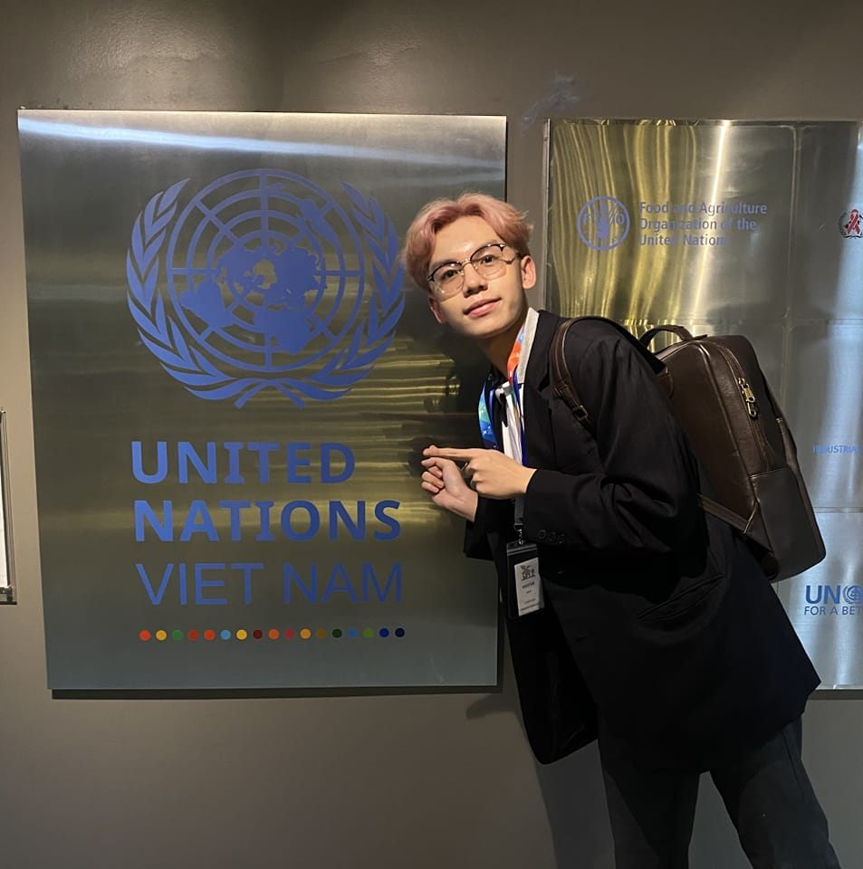
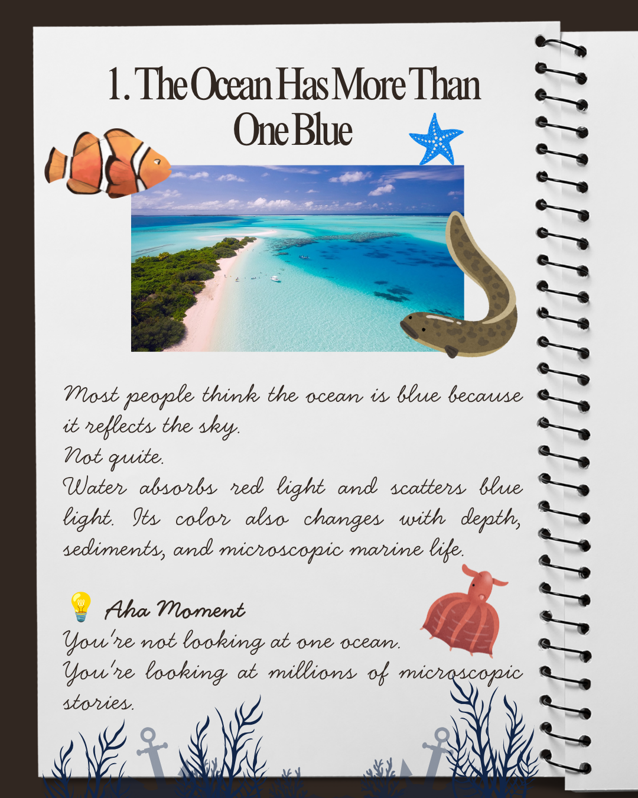
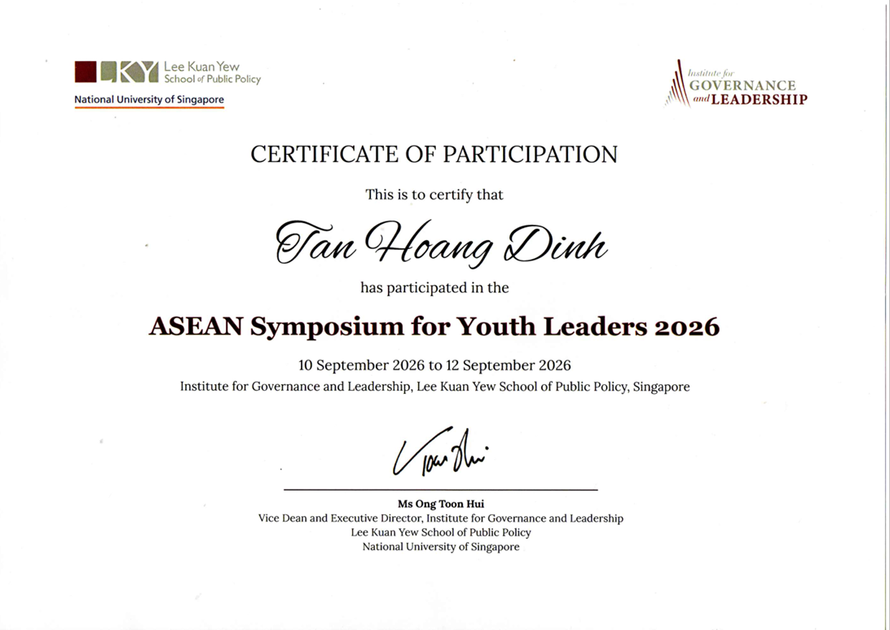
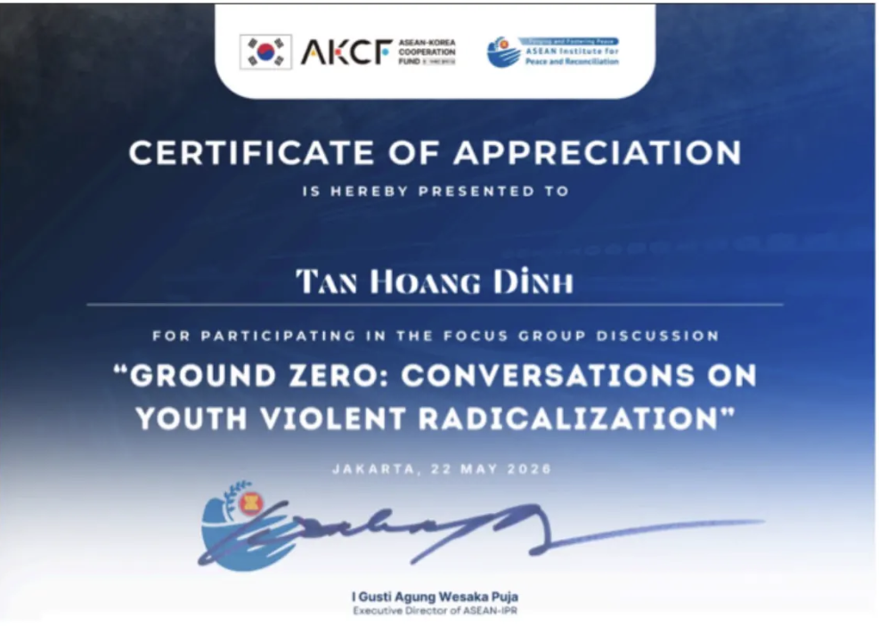
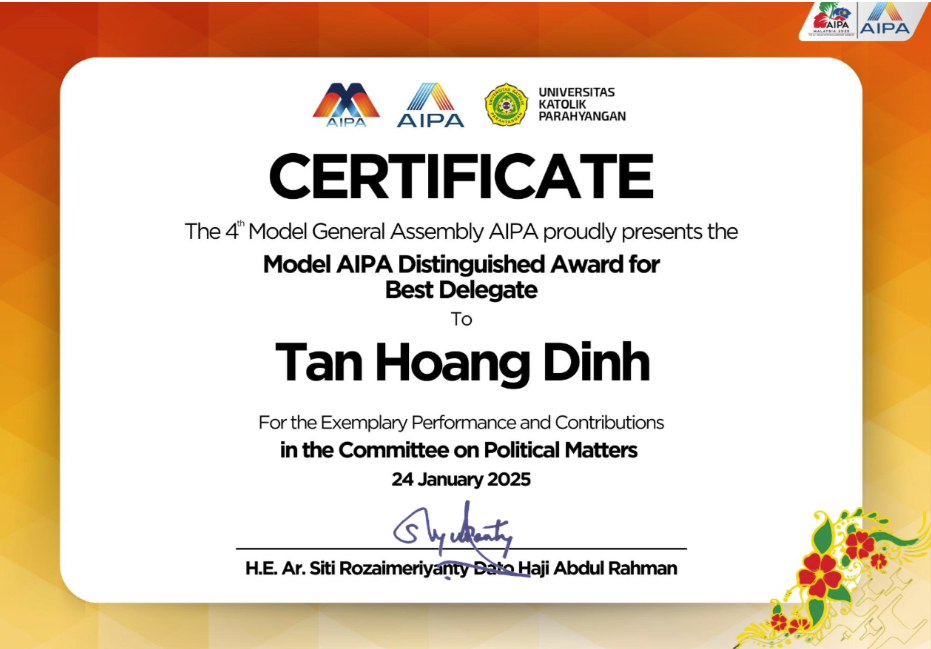
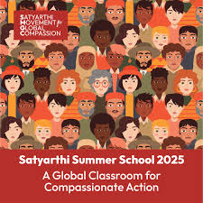
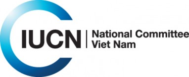
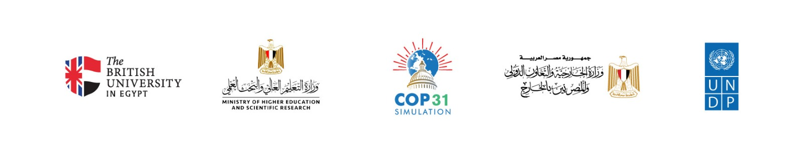

Connecting Economic Development, Youth Leadership & Sustainable Futures.
Vietnamese Economic Development scholar in Indonesia, building connections between research, regional collaboration, and community impact.
I'm Tan Hoang Dinh, a Vietnamese Economic Development undergraduate at Universitas Wijaya Kusuma Surabaya, studying under the Indonesian Government's prestigious KNB Scholarship.
My journey is driven by a belief that economic growth, education, youth leadership, and sustainability can create lasting impact — especially when connected across borders.
Through academic learning, hands-on projects, and community engagement, I work to build stronger collaboration between Vietnam and Indonesia, and contribute to a more inclusive and sustainable future across Southeast Asia.

Key competitive scholarships, research prizes, and regional leadership selections.
Sole Vietnamese recipient among 30 global candidates admitted under the Indonesian Government’s fully funded scholarship.
Research on the "Petrodollar–Green Innovation Nexus" proposing a Triple Helix framework for sovereign wealth investments.
Advocated inclusive education policies in ASEAN with resolutions adopted by 80% of nations; awarded Best Position Paper.
Awarded Best Speaker, Best Team, and Best Participant among 70 delegates from 8 countries focusing on STEM & SDGs.
Selected as one of 25 global changemakers from 1,200+ applicants across 250+ universities in 22 countries.
Founded Vietnam–Indonesia youth initiative for ocean conservation & blue economies; reached 500+ followers in 2 months.

A Vietnam–Indonesia youth initiative advancing ocean conservation, sustainable blue economies, and SDG 14. Connects youth engagement with coastal communities, marine biodiversity, and regional collaboration.
Qualitative meta-analysis exploring sovereign wealth, technology, and university–industry–government collaboration (Triple Helix framework) for green investment in resource-rich economies.
Authored research based on an empirical survey of 22 ASEAN youth, proposing an equitable policy framework for coastal livelihoods and climate-resilient community transitions.
Market research, talent mobility validation for GoPath (HRTech), and pet-owner panel development for SOPet (AI veterinary platform & e-pharmacy).
Led the Organizing Committee awarded "Best Active Team", impacting 1,000+ youths across 17 provinces and launching 3 nonprofit scholarship-access initiatives for disadvantaged students.
Role: Lead Project. Recruited, trained, and managed 50+ volunteers and staff. Led three major marketing strategies to promote Vietnamese literature and educational initiatives.
Facebook Page →Role: Head of Content. Led two cohorts of content creators and directed the "Du com cung Hanoilust" charity project supporting 40+ homeless individuals in Hanoi.
Evidence →Role: Mentor. Mentored a Myanmar youth team that won 1st Prize at Japan Youth Summit 2026 with SHWEPHYYA, an urban plastic-recovery & photobioreactor initiative for Yangon.
Evidence →Role: Event Organizer. Co-launched online scholarship fair with Ybox.vn and Abroad Insider, improving higher-education access for remote communities.
Evidence →Lead mentorship sessions on fundraising strategies, merchandise campaigns, and financial coordination supporting UN-aligned youth programs.
Direct ocean conservation advocacy, youth workshops, and cross-border partnerships advancing sustainable blue economies and marine protection.
Recruited, trained, and managed 50+ volunteers and staff, executing 3 extensive multi-channel marketing campaigns.
Connected 5 departments and 4 regional projects; contributed to 2 UN-endorsed events on awareness and inclusion across Central Vietnam.
Coordinated free meal initiatives for blue-collar workers and vulnerable populations, championing international student volunteering.
Mentored the 1st prize winning youth team from Myanmar on urban plastic recovery, photobioreactors, and SDG 11 framework.

NUS Lee Kuan Yew School of Public Policy, Singapore
View Documentation →
Presented research on AI-driven environmental compliance and blockchain transparency.
View Documentation →
New Delhi, India • 1 of 11 Asia-Pacific youth delegates proposing organic waste interventions.
View Documentation →
Selected as 1 of 25 global changemakers from more than 1,200 applicants worldwide.
View Documentation →
IPB University, Bogor • Blue innovation, marine by-product valorization & resource policy.
View Documentation →
"FutureWorks: Designing Jobs for the Digital Age" • Virtual global dialogue.
View Documentation →Panel speaker on Youth Empowerment and Capacity Building.
Documentation →Shared ecological waste-management practices from Da Lat with 200+ global participants.
Documentation →Addressed vulnerability, authenticity, and leadership in cross-cultural Southeast Asian settings.
Documentation →Simulated the role of President of Australia, examining economic divides and regional diplomacy.
Documentation →Selected among 22 youth by ASEAN Institute for Peace & Reconciliation on digital resilience.
Documentation →Organized by BUE and UNDP Egypt; authored empirical research surveying 22 ASEAN youth.
Documentation →Pursuing full undergraduate degree in Development Economics under the fully funded Indonesian Ministry scholarship. Coursework in macro/microeconomic theory, statistics, econometrics, and regional sustainable development.
Specialized in Vietnamese and international literature, advanced mathematics, English, and analytical writing.